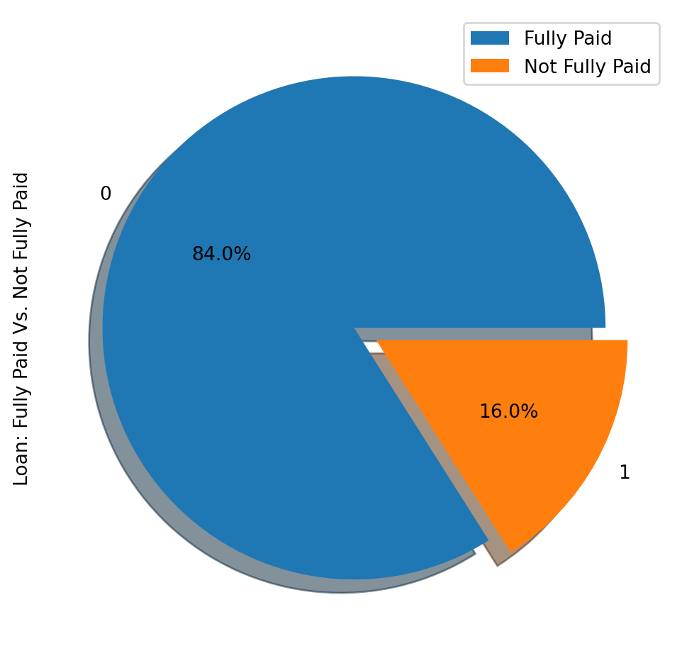

Classification in machine learning is the technique of categorizing data points into predefined groups or labels based on their attributes. This process allows algorithms to understand and accurately predict the category of new, unobserved examples.
In recent times, various industries are grappling with extremely large and diverse datasets. Processing this data manually is not only time-consuming but may also lack long-term value. To enhance return on investment, a range of strategies are being employed, from basic automation to advanced machine learning techniques. This blog will focus on a key concept in this field: classification in machine learning.
We’ll begin by explaining the essence of classification within the realm of Machine Learning, followed by a discussion on the two types of learners in machine learning, as well as distinguishing between classification and regression. Next, the blog will explore various real-life applications of classification. Subsequently, we’ll delve into the different kinds of classification methods and examine some specific examples of classification algorithms. To conclude, the blog will offer practical experience in implementing several of these algorithms.
Defining Classification in Machine Learning
Classification is a type of supervised learning in machine learning where the goal is to accurately predict the label of given input data. In this process, the model is thoroughly trained with training data and then evaluated using test data before it is applied to predict labels for new, unseen data.
For example, a machine learning algorithm can be trained to determine whether an email is spam or not (ham). However, before delving into the nuances of classification, it’s essential to understand the difference between two classifications of learners: lazy and eager learners, and to clear up common confusions between classification and regression. Lazy Learners vs. Eager Learners: In the realm of machine learning classification, there are two distinct types of learners: lazy and eager learners.
Eager learners are those algorithms that construct a model based on the training dataset before making predictions on new data. These algorithms invest more time in the training phase to better generalize from the data by learning the weights, but they are quicker in making predictions. Examples of eager learners include:
Logistic Regression. Support Vector Machine. Decision Trees. Artificial Neural Networks. Conversely, lazy learners, or instance-based learners, do not immediately generate a model from the training data. This is where the ‘lazy’ aspect comes in. They store the training data and, for each prediction, they search the entire training set for the nearest neighbor, resulting in slower prediction times. Examples of lazy learners are:
K-Nearest Neighbor. Case-based reasoning. However, there are techniques like BallTrees and KDTrees that can enhance prediction speed in these algorithms.
Examples of Machine Learning Classification in Real Life
Supervised Machine Learning Classification has different applications in multiple domains of our day-to-day life. Below are some examples.
Application in Healthcare :
Supervised machine learning classification plays a significant role in various aspects of everyday life. Here are some key examples, particularly in the healthcare domain.
During the COVID-19 pandemic, supervised machine learning models were crucial in predicting whether individuals were infected with the virus
Machine learning models are also utilized by researchers to forecast the likelihood of new diseases emerging in the future.
Education :
Utilizing machine learning for categorizing various documents like text, video, and audio.
Automatically determining the language of students’ application documents.
Analyzing students’ feedback about professors to gauge sentiments.
Transportation :
Predicting areas likely to experience increased traffic volume.
Anticipating potential transportation problems in specific areas due to weather conditions.
Sustainable Agriculture :
Using classification models to identify the most suitable land types for different seeds.
Forecasting weather conditions to aid farmers in taking appropriate preventive actions.
Different Types of Classification Tasks in Machine Learning
There are four main classification tasks in Machine learning: binary, multi-class, multi-label, and imbalanced classifications.
Binary Classification: In a binary classification task, the goal is to classify the input data into two mutually exclusive categories. The training data in such a situation is labeled in a binary format: true and false; positive and negative; O and 1; spam and not spam, etc. depending on the problem being tackled. For instance, we might want to detect whether a given image is a truck or a boat. Logistic Regression and Support Vector Machines algorithms are natively designed for binary classifications. However, other algorithms such as K-Nearest Neighbors and Decision Trees can also be used for binary classification.
Multi-Class Classification: The multi-class classification, on the other hand, has at least two mutually exclusive class labels, where the goal is to predict to which class a given input example belongs to. In the following case, the model correctly classified the image to be a plane. Most of the binary classification algorithms can be also used for multi-class classification. These algorithms include but are not limited to:
Naive Bayes: Naive Bayes is a probabilistic classification algorithm based on Bayes’ theorem. It’s particularly suited for text classification tasks and spam email filtering, where it assumes independence between features.
K-Nearest Neighbors: K-NN is a straightforward yet powerful algorithm that classifies data points based on the majority class among their k-nearest neighbors. It’s versatile and can be applied to various types of data, but the choice of k is crucial for its performance.
Support Vector Machines: SVMs are effective for both linear and nonlinear classification tasks. They work by finding the optimal hyperplane that maximizes the margin between classes, making them robust against overfitting and suitable for high-dimensional data.
Logistic Regression: Logistic regression is a widely used classification algorithm that models the probability of an input belonging to a particular category. It’s simple, interpretable, and effective for binary and multiclass classification tasks.
Multi-Label Classification: In multi-label classification tasks, we try to predict 0 or more classes for each input example. In this case, there is no mutual exclusion because the input example can have more than one label. Such a scenario can be observed in different domains, such as auto-tagging in Natural Language Processing, where a given text can contain multiple topics. Similarly to computer vision, an image can contain multiple objects, as illustrated below: the model predicted that the image contains: a plane, a boat, a truck, and a dog. It is not possible to use multi-class or binary classification models to perform multi-label classification. However, most algorithms used for those standard classification tasks have their specialized versions for multi-label classification. We can cite:
Multi-label Decision Trees
Multi-label Gradient Boosting
Multi-label Random Forests
Imbalanced Classification: For the imbalanced classification, the number of examples is unevenly distributed in each class, meaning that we can have more of one class than the others in the training data. Let’s consider the following 3-class classification scenario where the training data contains: 60% of trucks, 25% of planes, and 15% of boats.The imbalanced classification problem could occur in the following scenario:
Fraudulent transaction detections in financial industries
Rare disease diagnosis
Customer churn analysis
Using conventional predictive models such as Decision Trees, Logistic Regression, etc. could not be effective when dealing with an imbalanced dataset, because they might be biased toward predicting the class with the highest number of observations, and considering those with fewer numbers as noise.
So, does that mean that such problems are left behind?
Of course not! We can use multiple approaches to tackle the imbalance problem in a dataset. The most commonly used approaches include sampling techniques or harnessing the power of cost-sensitive algorithms.
Sampling Techniques These techniques aim to balance the distribution of the original by:
Cluster-based Oversampling:
Random undersampling: random elimination of examples from the majority class.
SMOTE Oversampling: random replication of examples from the minority class.
Cost-Sensitive Algorithms These algorithms take into consideration the cost of misclassification. They aim to minimize the total cost generated by the models.
Cost-sensitive Decision Trees.
Cost-sensitive Logistic Regression.
Cost-sensitive Support Vector Machines.
Example: Distribution of Loans in the Dataset
Look at the first five observations in the dataset.
import pandas as pdloan_data = pd.read_csv("loan_data.csv")loan_data.head()
credit.policy
purpose
int.rate
installment
log.annual.inc
dti
fico
days.with.cr.line
revol.bal
revol.util
inq.last.6mths
delinq.2yrs
pub.rec
not.fully.paid
0
1
debt_consolidation
0.1189
829.10
11.350407
19.48
737
5639.958333
28854
52.1
0
0
0
0
1
1
credit_card
0.1071
228.22
11.082143
14.29
707
2760.000000
33623
76.7
0
0
0
0
2
1
debt_consolidation
0.1357
366.86
10.373491
11.63
682
4710.000000
3511
25.6
1
0
0
0
3
1
debt_consolidation
0.1008
162.34
11.350407
8.10
712
2699.958333
33667
73.2
1
0
0
0
4
1
credit_card
0.1426
102.92
11.299732
14.97
667
4066.000000
4740
39.5
0
1
0
0
Borrowers profile in the dataset.
import matplotlib.pyplot as plt# Helper function for data distribution# Visualize the proportion of borrowersdef show_loan_distrib(data): count =""ifisinstance(data, pd.DataFrame): count = data["not.fully.paid"].value_counts()else: count = data.value_counts() count.plot(kind ='pie', explode = [0, 0.1], figsize = (6, 6), autopct ='%1.1f%%', shadow =True) plt.ylabel("Loan: Fully Paid Vs. Not Fully Paid") plt.legend(["Fully Paid", "Not Fully Paid"]) plt.show()# Visualize the proportion of borrowersshow_loan_distrib(loan_data)

From the graphic above, we notice that 84% of the borrowers paid their loans back, and only 16% didn’t pay them back, which makes the dataset really imbalanced.
Variable Types Before further, we need to check the variables’ type so that we can encode those that need to be encoded.
We notice that all the columns are continuous variables, except the purpose attribute, which needs to be encoded.
from imblearn.over_sampling import SMOTEsmote = SMOTE(sampling_strategy='minority')X_train_SMOTE, y_train_SMOTE = smote.fit_resample(X_train,y_train)# Visualize the proportion of borrowersshow_loan_distrib(y_train_SMOTE)
C:\Users\Lenovo\AppData\Local\Programs\Python\Python312\Lib\site-packages\joblib\externals\loky\backend\context.py:136: UserWarning:
Could not find the number of physical cores for the following reason:
[WinError 2] The system cannot find the file specified
Returning the number of logical cores instead. You can silence this warning by setting LOKY_MAX_CPU_COUNT to the number of cores you want to use.
File "C:\Users\Lenovo\AppData\Local\Programs\Python\Python312\Lib\site-packages\joblib\externals\loky\backend\context.py", line 257, in _count_physical_cores
cpu_info = subprocess.run(
^^^^^^^^^^^^^^^
File "C:\Users\Lenovo\AppData\Local\Programs\Python\Python312\Lib\subprocess.py", line 548, in run
with Popen(*popenargs, **kwargs) as process:
^^^^^^^^^^^^^^^^^^^^^^^^^^^
File "C:\Users\Lenovo\AppData\Local\Programs\Python\Python312\Lib\subprocess.py", line 1026, in __init__
self._execute_child(args, executable, preexec_fn, close_fds,
File "C:\Users\Lenovo\AppData\Local\Programs\Python\Python312\Lib\subprocess.py", line 1538, in _execute_child
hp, ht, pid, tid = _winapi.CreateProcess(executable, args,
^^^^^^^^^^^^^^^^^^^^^^^^^^^^^^^^^^^^^^^
After applying the sampling strategies, we observe that the dataset is equally distributed across the different types of borrowers.
Application of Some Machine Learning Classification Algorithms
This section will apply these two classification algorithms to the SMOTE smote sampled dataset. The same training approach can be applied to undersampled data as well.
Logistic Regression
This is an explainable algorithm. It classifies a data point by modeling its probability of belonging to a given class using the sigmoid function.
from sklearn.linear_model import LogisticRegressionfrom sklearn.metrics import confusion_matrix, classification_reportX = loan_data_undersample.drop('not.fully.paid', axis =1)y = loan_data_undersample['not.fully.paid']X_train, X_test, y_train, y_test = train_test_split(X, y, test_size=0.15, stratify = y, random_state=2022)logistic_classifier = LogisticRegression()logistic_classifier.fit(X_train, y_train)y_pred = logistic_classifier.predict(X_test)print(confusion_matrix(y_test,y_pred))print(classification_report(y_test,y_pred))
These results can be of course improved with more feature engineering and fine-tuning. But they are better than using the original imbalanced data.
Support Vector Machines
This algorithm can be used for both classification and regression. It learns to draw the hyperplane (decision boundary) by using the margin to maximization principle. This decision boundary is drawn through the two closest support vectors.
SVM provides a transformation strategy called kernel tricks used to project non-learner separable data onto a higher dimension space to make them linearly separable.
from sklearn.svm import SVCsvc_classifier = SVC(kernel='linear')svc_classifier.fit(X_train, y_train)# Make Prediction & print the resulty_pred = svc_classifier.predict(X_test)print(classification_report(y_test,y_pred))
These results can be of course improved with more feature engineering and fine-tuning. But they are better than using the original imbalanced data.
Summary
In summary, this blog has thoroughly explored the fundamental aspects of classification in machine learning, offering insights into its diverse applications across various fields. Additionally, it delved into the practical implementation of key machine learning models like Logistic Regression and Support Vector Machine, highlighting their application in scenarios involving both undersampling and SMOTE oversampling techniques to achieve a balanced dataset for model training.
Source Code
---title: "Classification"author: "Samheeta"date: "2023-12-6"jupyter: python3description: "Classification in machine learning is the technique of categorizing data points into predefined groups or labels based on their attributes. This process allows algorithms to understand and accurately predict the category of new, unobserved examples."---**Contents:**- Introduction to Classification.- Different types of classification.- Example of Linear Regression with [Loan dataset](https://www.kaggle.com/datasets/itssuru/loan-data/).- Data Visualization- Data processing- Model implementation- Evaluation metrics implementation## Introduction to ClassificationIn recent times, various industries are grappling with extremely large and diverse datasets. Processing this data manually is not only time-consuming but may also lack long-term value. To enhance return on investment, a range of strategies are being employed, from basic automation to advanced machine learning techniques. This blog will focus on a key concept in this field: classification in machine learning.We'll begin by explaining the essence of classification within the realm of Machine Learning, followed by a discussion on the two types of learners in machine learning, as well as distinguishing between classification and regression. Next, the blog will explore various real-life applications of classification. Subsequently, we'll delve into the different kinds of classification methods and examine some specific examples of classification algorithms. To conclude, the blog will offer practical experience in implementing several of these algorithms.## Defining Classification in Machine LearningClassification is a type of supervised learning in machine learning where the goal is to accurately predict the label of given input data. In this process, the model is thoroughly trained with training data and then evaluated using test data before it is applied to predict labels for new, unseen data.For example, a machine learning algorithm can be trained to determine whether an email is spam or not (ham). However, before delving into the nuances of classification, it's essential to understand the difference between two classifications of learners: lazy and eager learners, and to clear up common confusions between classification and regression..png){}Lazy Learners vs. Eager Learners:In the realm of machine learning classification, there are two distinct types of learners: lazy and eager learners.Eager learners are those algorithms that construct a model based on the training dataset before making predictions on new data. These algorithms invest more time in the training phase to better generalize from the data by learning the weights, but they are quicker in making predictions. Examples of eager learners include:Logistic Regression.Support Vector Machine.Decision Trees.Artificial Neural Networks.Conversely, lazy learners, or instance-based learners, do not immediately generate a model from the training data. This is where the 'lazy' aspect comes in. They store the training data and, for each prediction, they search the entire training set for the nearest neighbor, resulting in slower prediction times. Examples of lazy learners are:K-Nearest Neighbor.Case-based reasoning.However, there are techniques like BallTrees and KDTrees that can enhance prediction speed in these algorithms.## Examples of Machine Learning Classification in Real Life Supervised Machine Learning Classification has different applications in multiple domains of our day-to-day life. Below are some examples. **Application in Healthcare :**Supervised machine learning classification plays a significant role in various aspects of everyday life. Here are some key examples, particularly in the healthcare domain. - During the COVID-19 pandemic, supervised machine learning models were crucial in predicting whether individuals were infected with the virus - Machine learning models are also utilized by researchers to forecast the likelihood of new diseases emerging in the future.**Education :**- Utilizing machine learning for categorizing various documents like text, video, and audio.- Automatically determining the language of students' application documents.- Analyzing students' feedback about professors to gauge sentiments.**Transportation :**- Predicting areas likely to experience increased traffic volume.- Anticipating potential transportation problems in specific areas due to weather conditions.**Sustainable Agriculture :**- Using classification models to identify the most suitable land types for different seeds.- Forecasting weather conditions to aid farmers in taking appropriate preventive actions.## Different Types of Classification Tasks in Machine Learning There are four main classification tasks in Machine learning: binary, multi-class, multi-label, and imbalanced classifications. - **Binary Classification**: In a binary classification task, the goal is to classify the input data into two mutually exclusive categories. The training data in such a situation is labeled in a binary format: true and false; positive and negative; O and 1; spam and not spam, etc. depending on the problem being tackled. For instance, we might want to detect whether a given image is a truck or a boat. Logistic Regression and Support Vector Machines algorithms are natively designed for binary classifications. However, other algorithms such as K-Nearest Neighbors and Decision Trees can also be used for binary classification. - **Multi-Class Classification**: The multi-class classification, on the other hand, has at least two mutually exclusive class labels, where the goal is to predict to which class a given input example belongs to. In the following case, the model correctly classified the image to be a plane. Most of the binary classification algorithms can be also used for multi-class classification. These algorithms include but are not limited to:- [Naive Bayes](https://monkeylearn.com/blog/classification-algorithms/#naive-bayes): Naive Bayes is a probabilistic classification algorithm based on Bayes' theorem. It's particularly suited for text classification tasks and spam email filtering, where it assumes independence between features.- [K-Nearest Neighbors](https://monkeylearn.com/blog/classification-algorithms/#knn): K-NN is a straightforward yet powerful algorithm that classifies data points based on the majority class among their k-nearest neighbors. It's versatile and can be applied to various types of data, but the choice of k is crucial for its performance.- [Support Vector Machines](https://monkeylearn.com/blog/classification-algorithms/#svm): SVMs are effective for both linear and nonlinear classification tasks. They work by finding the optimal hyperplane that maximizes the margin between classes, making them robust against overfitting and suitable for high-dimensional data.- [Logistic Regression](https://monkeylearn.com/blog/classification-algorithms/#logistic-regression): Logistic regression is a widely used classification algorithm that models the probability of an input belonging to a particular category. It's simple, interpretable, and effective for binary and multiclass classification tasks.- **Multi-Label Classification**: In multi-label classification tasks, we try to predict 0 or more classes for each input example. In this case, there is no mutual exclusion because the input example can have more than one label. Such a scenario can be observed in different domains, such as auto-tagging in Natural Language Processing, where a given text can contain multiple topics. Similarly to computer vision, an image can contain multiple objects, as illustrated below: the model predicted that the image contains: a plane, a boat, a truck, and a dog. It is not possible to use multi-class or binary classification models to perform multi-label classification. However, most algorithms used for those standard classification tasks have their specialized versions for multi-label classification. We can cite: - Multi-label Decision Trees- Multi-label Gradient Boosting- Multi-label Random Forests- **Imbalanced Classification**: For the imbalanced classification, the number of examples is unevenly distributed in each class, meaning that we can have more of one class than the others in the training data. Let’s consider the following 3-class classification scenario where the training data contains: 60% of trucks, 25% of planes, and 15% of boats.The imbalanced classification problem could occur in the following scenario:- Fraudulent transaction detections in financial industries- Rare disease diagnosis - Customer churn analysisUsing conventional predictive models such as Decision Trees, Logistic Regression, etc. could not be effective when dealing with an imbalanced dataset, because they might be biased toward predicting the class with the highest number of observations, and considering those with fewer numbers as noise. So, does that mean that such problems are left behind?Of course not! We can use multiple approaches to tackle the imbalance problem in a dataset. The most commonly used approaches include sampling techniques or harnessing the power of cost-sensitive algorithms. - **Sampling Techniques** These techniques aim to balance the distribution of the original by: - Cluster-based Oversampling:- Random undersampling: random elimination of examples from the majority class. - SMOTE Oversampling: random replication of examples from the minority class. - **Cost-Sensitive Algorithms** These algorithms take into consideration the cost of misclassification. They aim to minimize the total cost generated by the models.- Cost-sensitive Decision Trees.- Cost-sensitive Logistic Regression. - Cost-sensitive Support Vector Machines.## Example: Distribution of Loans in the Dataset - Look at the first five observations in the dataset. ```{python}import pandas as pdloan_data = pd.read_csv("loan_data.csv")loan_data.head()```- Borrowers profile in the dataset. ```{python}import matplotlib.pyplot as plt# Helper function for data distribution# Visualize the proportion of borrowersdef show_loan_distrib(data): count =""ifisinstance(data, pd.DataFrame): count = data["not.fully.paid"].value_counts()else: count = data.value_counts() count.plot(kind ='pie', explode = [0, 0.1], figsize = (6, 6), autopct ='%1.1f%%', shadow =True) plt.ylabel("Loan: Fully Paid Vs. Not Fully Paid") plt.legend(["Fully Paid", "Not Fully Paid"]) plt.show()# Visualize the proportion of borrowersshow_loan_distrib(loan_data)```From the graphic above, we notice that 84% of the borrowers paid their loans back, and only 16% didn’t pay them back, which makes the dataset really imbalanced.- **Variable Types**Before further, we need to check the variables’ type so that we can encode those that need to be encoded. We notice that all the columns are continuous variables, except the purpose attribute, which needs to be encoded. ```{python}# Check column typesprint(loan_data.dtypes)``````{python}encoded_loan_data = pd.get_dummies(loan_data, prefix="purpose", drop_first=True)print(encoded_loan_data.dtypes)```## Separate data into train and test```{python}from sklearn.model_selection import train_test_splitX = encoded_loan_data.drop('not.fully.paid', axis =1)y = encoded_loan_data['not.fully.paid']X_train, X_test, y_train, y_test = train_test_split(X, y, test_size=0.30, stratify = y, random_state=2022)```## Application of the Sampling Strategies We will explore two sampling strategies here: random undersampling, and SMOTE oversampling.## Random Undersampling We will undersample the majority class, which corresponds to the “fully paid” (class 0). ```{python}X_train_cp = X_train.copy()X_train_cp['not.fully.paid'] = y_trainy_0 = X_train_cp[X_train_cp['not.fully.paid'] ==0]y_1 = X_train_cp[X_train_cp['not.fully.paid'] ==1]y_0_undersample = y_0.sample(y_1.shape[0])loan_data_undersample = pd.concat([y_0_undersample, y_1], axis =0)# Visualize the proportion of borrowersshow_loan_distrib(loan_data_undersample)```## SMOTE OversamplingPerform oversampling on the minority class```{python}from imblearn.over_sampling import SMOTEsmote = SMOTE(sampling_strategy='minority')X_train_SMOTE, y_train_SMOTE = smote.fit_resample(X_train,y_train)# Visualize the proportion of borrowersshow_loan_distrib(y_train_SMOTE)```After applying the sampling strategies, we observe that the dataset is equally distributed across the different types of borrowers.## Application of Some Machine Learning Classification AlgorithmsThis section will apply these two classification algorithms to the SMOTE smote sampled dataset. The same training approach can be applied to undersampled data as well. ## Logistic Regression This is an explainable algorithm. It classifies a data point by modeling its probability of belonging to a given class using the sigmoid function. ```{python}from sklearn.linear_model import LogisticRegressionfrom sklearn.metrics import confusion_matrix, classification_reportX = loan_data_undersample.drop('not.fully.paid', axis =1)y = loan_data_undersample['not.fully.paid']X_train, X_test, y_train, y_test = train_test_split(X, y, test_size=0.15, stratify = y, random_state=2022)logistic_classifier = LogisticRegression()logistic_classifier.fit(X_train, y_train)y_pred = logistic_classifier.predict(X_test)print(confusion_matrix(y_test,y_pred))print(classification_report(y_test,y_pred))```These results can be of course improved with more feature engineering and fine-tuning. But they are better than using the original imbalanced data. ## Support Vector Machines This algorithm can be used for both classification and regression. It learns to draw the hyperplane (decision boundary) by using the margin to maximization principle. This decision boundary is drawn through the two closest support vectors. SVM provides a transformation strategy called kernel tricks used to project non-learner separable data onto a higher dimension space to make them linearly separable. ```{python}from sklearn.svm import SVCsvc_classifier = SVC(kernel='linear')svc_classifier.fit(X_train, y_train)# Make Prediction & print the resulty_pred = svc_classifier.predict(X_test)print(classification_report(y_test,y_pred))```These results can be of course improved with more feature engineering and fine-tuning. But they are better than using the original imbalanced data. ## SummaryIn summary, this blog has thoroughly explored the fundamental aspects of classification in machine learning, offering insights into its diverse applications across various fields. Additionally, it delved into the practical implementation of key machine learning models like Logistic Regression and Support Vector Machine, highlighting their application in scenarios involving both undersampling and SMOTE oversampling techniques to achieve a balanced dataset for model training.
.png) Lazy Learners vs. Eager Learners: In the realm of machine learning classification, there are two distinct types of learners: lazy and eager learners.
Lazy Learners vs. Eager Learners: In the realm of machine learning classification, there are two distinct types of learners: lazy and eager learners.